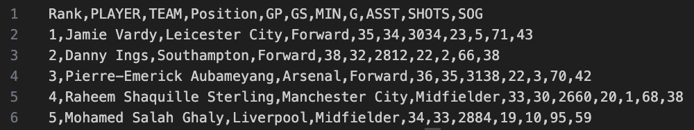
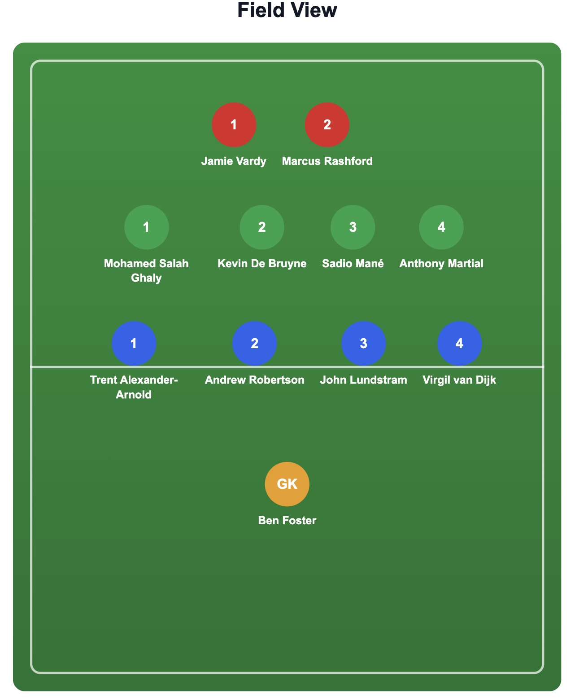

A foundation in vector spaces, transformations, eigenvalues, and the mathematics behind modern computing.
Linear Algebra was one of the most foundational courses I took at the University of Michigan. The class focused on core mathematical ideas such as systems of equations, matrix operations, determinants, eigenvalues, eigenvectors, orthogonality, and diagonalization. More than just learning how to solve problems, the course emphasized understanding how algebraic structures can describe transformations, geometry, and relationships across higher-dimensional spaces.
I’m including Linear Algebra here because it became one of the most important mathematical frameworks behind the kinds of technical work I’m interested in, especially machine learning, optimization, and data science. This course helped me move beyond memorizing formulas and start thinking more structurally about how systems behave, how dimensions interact, and how mathematical tools can simplify complex problems.
Throughout the course, I worked through problem sets involving matrix decomposition, vector spaces, basis transformations, and proof-based reasoning. I focused not only on reaching the correct answer, but on understanding the logic behind each step and building a stronger intuition for the geometry and computation involved. This class strengthened both my symbolic problem-solving skills and my ability to explain difficult mathematical ideas clearly.

